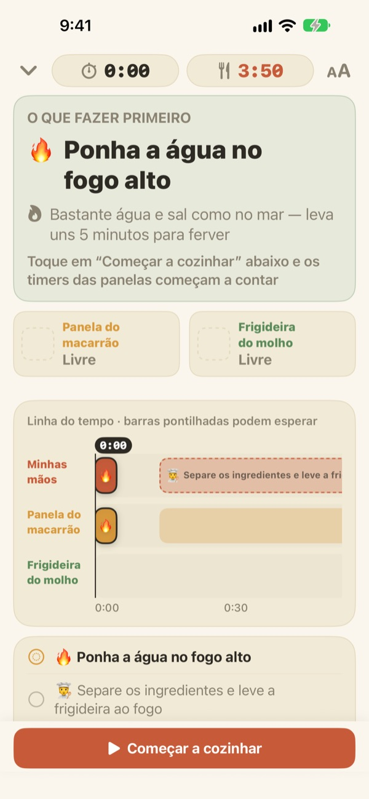
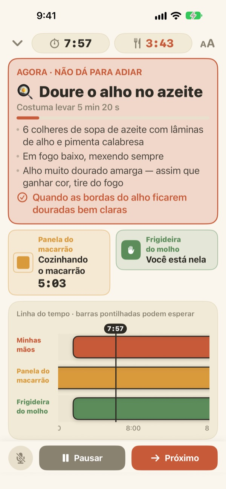
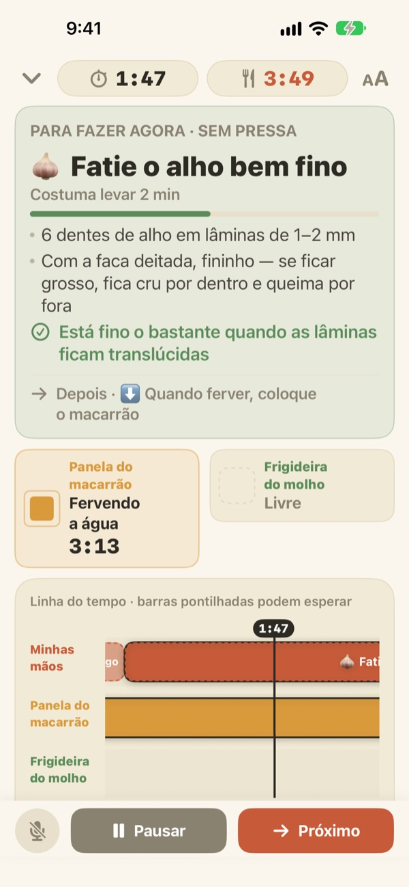
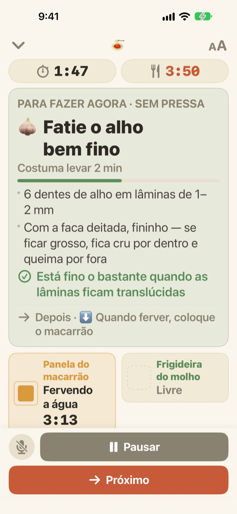

O macarrão cozinha.
O molho fica pronto junto.
Quando duas panelas andam em ritmos diferentes, o Geusaie mostra em letras grandes a única coisa que suas mãos precisam fazer agora. O molho é programado de trás para frente, a partir da hora em que o macarrão sai da água.
Todos os recursos são gratuitos. Não precisa de conta.

Experimente
Prepare um aglio e olio em velocidade 20x. Toque em Começar a cozinhar e depois em Próximo sempre que você teria terminado uma tarefa. Veja como o cartão muda quando chega a hora de escorrer o macarrão.
Três timers ligados e o macarrão passou do ponto mesmo assim?
Um timer para o macarrão, outro para o molho e o alho de cabeça, e de repente você não sabe mais o que vem primeiro. Você está fatiando bem na hora de escorrer, e o molho fica pronto dois minutos depois. O Geusaie conhece a receita como “isto, depois aquilo” e só mostra a única coisa a fazer agora.
O que não pode esperar fica vermelho
Escorrer o macarrão, o alho quase queimando: quando uma tarefa estragaria o prato se atrasasse, o cartão fica cor de terracota e avisa para deixar a tábua de lado.
Quando uma panela termina, chega uma notificação mesmo que você não esteja olhando, com o que precisa ser feito na hora.

Picar só quando as mãos estão livres
Fatiar alho, ralar queijo, medir: nada disso tem hora marcada, então o Geusaie não conta segundos. A barra enche enquanto suas mãos estão livres, para quando uma panela chama e continua de onde você parou.
Acendeu o fogo três minutos depois? Todo o resto anda três minutos junto. O cronograma é recalculado a partir do que você realmente fez.

Apoiado na bancada, avance com a voz
Quatro tamanhos de texto para ler a um ou dois passos de distância, e a tela não apaga enquanto você cozinha.
Mãos molhadas? Diga próximo e o app passa para a próxima tarefa sem você encostar na tela.

Três passos até a mesa
- 1
Escolha um prato
Você vê mais ou menos quanto tempo leva e quantas panelas precisa.
- 2
Toque em Começar a cozinhar
Ele mostra sua primeira tarefa, e os relógios das panelas começam assim que você toca.
- 3
Terminou? Próximo.
Toque no botão ou diga “próximo” e aparece a tarefa seguinte.
A cor diz o quanto é urgente
- Verde
- Preparo. Sem pressa.
- Mostarda
- Uma panela precisa de você. É agora, mas sem correria.
- Terracota
- Se esperar, o macarrão passa do ponto ou o alho queima. Faça agora.
- Quadros das panelas
- O quadrado que diminui é o tempo que falta. O tempo das panelas nunca fica escondido.
Na linha do tempo, as barras tracejadas são tarefas que podem esperar.
Todos os recursos são gratuitos
Grátis
- As duas receitas
- Um timer para cada panela e a linha do tempo completa
- Notificação quando uma panela fica pronta
- “Próximo” por voz
- Quatro tamanhos de texto
- Abrir receitas pela Siri ou pelos Atalhos
Apoie o desenvolvedor (opcional)
- Se o app ajudar, você pode mandar uma pequena gorjeta pelos Ajustes
- A gorjeta não libera nada. Sem ela, todos os recursos continuam seus
Gorjetas avulsas, não uma assinatura.
Sem conta, sem anúncios, e funciona sem internet.
Perguntas frequentes
Digo “próximo” e nada acontece.
O botão do microfone, no canto inferior esquerdo, fica vermelho enquanto escuta e cinza quando está desligado. Na primeira vez, permita o microfone e o reconhecimento de fala; se recusou, ative de novo em Ajustes > Geusaie. O app escuta a palavra escrita no botão Próximo. Numa cozinha muito barulhenta, é só tocar em Próximo.
Uma panela terminou e não recebi notificação.
Confira se as notificações estão ativadas em Ajustes > Notificações > Geusaie. Um modo de Foco pode silenciá-las. As notificações só chegam quando uma panela fica pronta; o preparo nunca apressa você.
O que acontece com o cronograma se eu começar atrasado?
Ele é recalculado a partir do que você realmente fez. Se acender o fogo três minutos depois, tudo o que vem a seguir anda três minutos, e o molho continua programado de trás para frente a partir da hora em que o macarrão sai.
O texto está pequeno.
Na tela de preparo, toque no botão de tamanho do texto no canto superior direito e escolha Normal, Grande, Maior ou Máximo. Sua escolha fica salva.
A tela apaga enquanto eu cozinho?
Não. A tela fica acesa enquanto você cozinha, para você nunca precisar tocar nela com as mãos molhadas.
Quais pratos estão incluídos?
Aglio e olio (cerca de 15 minutos, 2 panelas) e macarrão ao molho de tomate com creme (cerca de 20 minutos, 2 panelas), com base em receitas de Serious Eats, Gimme Some Oven, RecipeTin Eats e The Burnt Butter Table. Qualquer prato com duas panelas ao mesmo tempo combina, então conte para a gente qual você quer.
Minha voz é gravada?
Não. O app só escuta a palavra “próximo” e não grava nem guarda áudio. Quando o aparelho permite, o reconhecimento é feito no próprio aparelho. Nenhum dado pessoal é coletado.
Dá para abrir com a Siri?
Sim. Escolha um prato na Siri ou no app Atalhos e a tela de preparo dele abre na hora. Os relógios começam quando você toca em Começar a cozinhar, quando estiver pronto para pôr a água no fogo.
Em quais aparelhos funciona?
No iPhone e no iPad com iOS 17 ou posterior. Não precisa de conta nem de internet.
Como relato um problema ou sugiro uma receita?
Em Ajustes > Enviar feedback no app, ou pelo e-mail abaixo. Informar o modelo do aparelho e a versão do iOS ajuda a gente a verificar mais rápido. Costumamos responder em poucos dias.
Travou em algo, viu um problema ou tem uma receita em mente? Escreva para leeo@kakao.com.